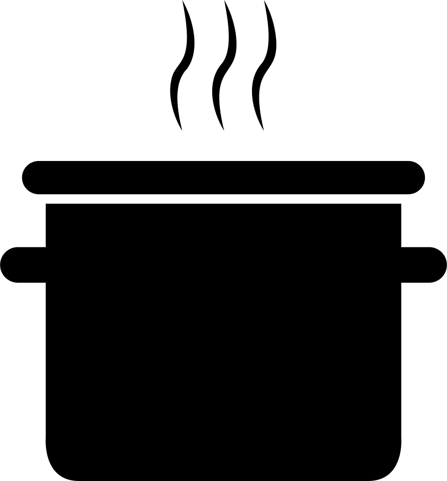

tiempo de preparacion:
15 minutos.
porciones:

para 1 persona.
ingredientes:
- 80 mililitros de café cargado y caliente
- 40 mililitros de Whisky irlandés
- 40 mililitros de nata batida, o crema de leche (previamente refrigerada)
- 15 gramos de azúcar
- canela en polvo (para decorar). opcional.
preparacion:
- Calentaremos agua con el simple propósito de verterla en las copas donde vamos a preparar el café. Dejamos que la copa o copas se calienten y empezamos con el café. Preparamos un café bien cargado, mejor si es un café espresso, aunque sino tenemos este tipo de cafetera, se puede preparar una cafetera italiana cargando bien de café.
- Agregamos el whisky Irlandés en un pocillo con el azúcar y calentamos casi hasta que llegue a hervir. Removemos bien para integrar el azúcar en el whisky. Lo podemos a calentar, si queremos bajar un poco el alcohol para que no salga un café tan fuerte, pero es optativo.
- Preparamos una especie de crema batida o nata montada. Para ello montamos la nata o crema de leche (35% materia grasa), recuerda que la nata debe estar en la nevera unas horas antes de montarla para que esté bien fría. Usamos una batidora de varillas y comienza por la velocidad mínima.
- Podemos añadir un poquito de azúcar para ayudar a montar (pero tampoco es necesario), es optativo. Debe quedar montada pero no en exceso, siempre sin formar picos, muy melosa y sin burbujas de aire visibles, queremos crema de leche casi como nata montada. Reservamos.
precentacion:
- Lo habitual en Irlanda es tomarlo en una copa alargada de cristal, así que si queremos mantener el espíritu del autentico Irish Coffee utilicemos este tipo de copas para prepararlo. Tiramos el agua de las copas que nos ha servido para calentar la copa y que no exista un choque térmico con el cristal y nos enfríeme demasiado el café antes de llevarlo a la masa de nuestros invitados.
- Vertemos primero el café bien cargado que hemos preparado. Vertemos el whisky irlandés que hemos calentado mezclado con el azúcar. Y con mucho cuidado y sobre una cucharilla dada la vuelta vertemos la nata montada sin que se mezcle con el café con el whisky, muy importante.
decoracion:
- El tema de la decoración la dejo a vuestro gusto, lo normal es poner algo de canela molida, un toque de nuez moscada o cacao en polvo. Pero no es necesario, sólo optativo. Y servimos bien calentito.
Otra opción es presentar el cóctel en tres capas: primero un fondo de alcohol con azúcar, después se echa el café, y se termina con la nata batida. Y si te gusta con otro toque, os aconsejo el café escocés, una receta deliciosa con el amargor del café expresso, el dulzor del helado de vainilla y la potencia del whisky seco, otra forma de tomar café.
si quieres descargar la reseta te dejo el archivo aqui abajo